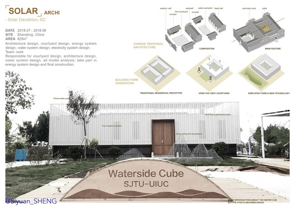

- [DATE] 07/2018 - 09/2018
- [SITE] Shandong, China
- [AREA] 625m²
- [Team Work] Architecture design, courtyard design, energy system design, water system design
-
The project is done by SJTU team cooperated with UIUC team. Participated in the competition, I basically participated the landscape design part and
the water circulation part.
-
The idea of the arch and the courtyard is orginated from the "waterside cube", which means the arch is built by watersied and is far away from the noisy world.
|
 |